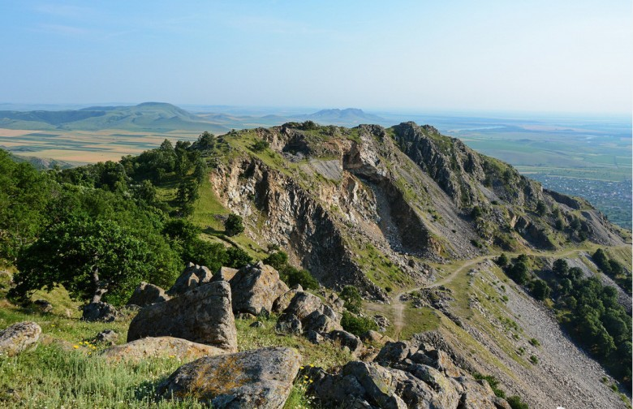
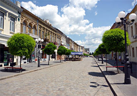
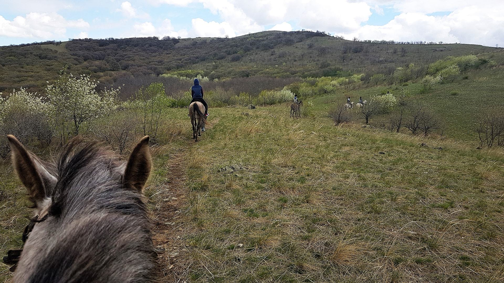

The Macin Mountains National Park's available natural potential is making it accessible to a wide range of tourists, interested in hiking, landscapes, flora, local fauna, studies and documentaries. On different levels of vegetation, between 7 and 467 m - Tutuiatu Peak, we meet the unique steppe landscapes on the slopes, followed by forests with oak, flowering ash, hornbeam and downy oak, leading to bushes on the peaks and cliffs, and steppe-looking alpine meadows. In the park there is one of the oldest, exciting and known reserves of our country – the Beech Valley Natural Reservation. It is characterized by the unique and vigorous presence of Tauric beech, which shows intermediate characters between the native beech, Oriental beech and coppice flora, unique in Dobrogea and similar to Crimean beech forests

Main attraction: Macin Mountains
The Măcin Mountains (Romanian: Munții Măcin) is a mountain range in Tulcea County, Dobrogea, Romania. Part of the Northern Dobruja Massif, they are located between Danube River to the north and west, Taița River and Culmea Niculițelului to the east and Casimcea Plateau to the south. Seen from the Danube, they seem only low hills. However, they are a mountainous region. The Măcin Mountains are one of the oldest in Romania, being formed in the second part of the Paleozoic, in the Carboniferous and Permian, during the Hercynian orogeny. The predominant rock is granite. Erosion (caused by the difference of temperature) has created steep slopes, with the aspect of ruins. They are divided in Culmea Măcinului (the southern part) and Culmea Pricopanului (the northern part). The highest peak is Țuțuiatu (also called Greci), which has a height of 467 meters. Other important peaks are Priopcea Hill (410 m) and Muntele lui Iacob (Iacob's Mountain – 341 m)..
2. Braila
Brăila is a city in Muntenia, eastern Romania, a port on the Danube and the capital of Brăila County. Streets radiating from near the port towards Brăila's center are crossed at symmetrical intervals by concentric streets following the geometric design of the old Ottoman fortifications. The old center of the city has many 19th century buildings, some of them fully restored. The most important monuments are the Greek Church, erected in 1863-1872 by the Greek community, the Sfinții Arhangheli Church, former jāmi during the Ottoman rule (until 1831), the 19th century Sfântul Nicolae Church, also from the 19th century, the Maria Filotti theatre, the Palace of Culture and its Art Museum, the History Museum, and the old Water Tower. Another important site is the Public Garden, a park situated above the bank of the Danube with a view over the river and the Măcin Mountains. Early in 2006 the municipality received European Union funds to renovate the old center of the city, aiming to transform Brăila into a major tourist attraction of Muntenia. The other important park of the city is the Monument Park, one of the largest urban parks in Romania, covering an area of up to 90 ha. The park is home to the Natural Science permanent exhibition of Braila Museum, hosting several dioramas that depict the flora and fauna of the region. The Church of the Holy Archangels is the oldest in the city. Begun in 1667, the former mosque was transformed into an Orthodox Church in 1808.
3. Cerna Riding Center
I knew that in the Macin area there is a riding center where you can climb a mountain on horseback, but I never arrived until yesterday. The interesting part is that you don't just walk in a pen, but walk through the forest, on the ridges and on the mountain plateau. Do not imagine now that it is a steep mountain. The route is very cool, the landscape is wonderful if it is clear, the horses are very gentle and they are used to walking, in Indian line, according to the guide. Even if you haven't ridden before, you get used to it immediately and it will be very pleasant, it's very easy. I recommend you try. All the fun lasts 4 hours on the road. Along with the unique landscape that will not be disappointed, tourists will have the opportunity to observe on the equestrian tourism route species such as Dobrogean bell, dwarf carnation, butterfly species not found in other parts of the world, reptiles, mammals, but also specimens of bird species protected by international conventions, such as the great mouse and the stonemason. With over 3,450 species of flora and fauna, but also with important areas of steppe vegetation, Măcinului Mountains National Park, declared a Biosphere Reserve in 1998, is the only area in the European Union where steppe-specific ecosystems meet along sub-Mediterranean forests and Balkan.
 
<-------------------------------- Braila
Horse riding at Cerna ---------------------------->